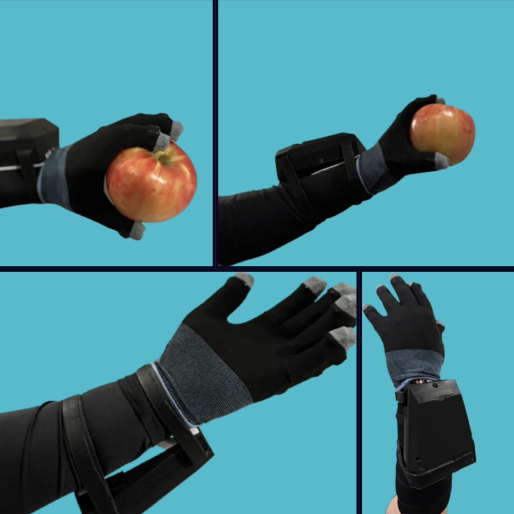
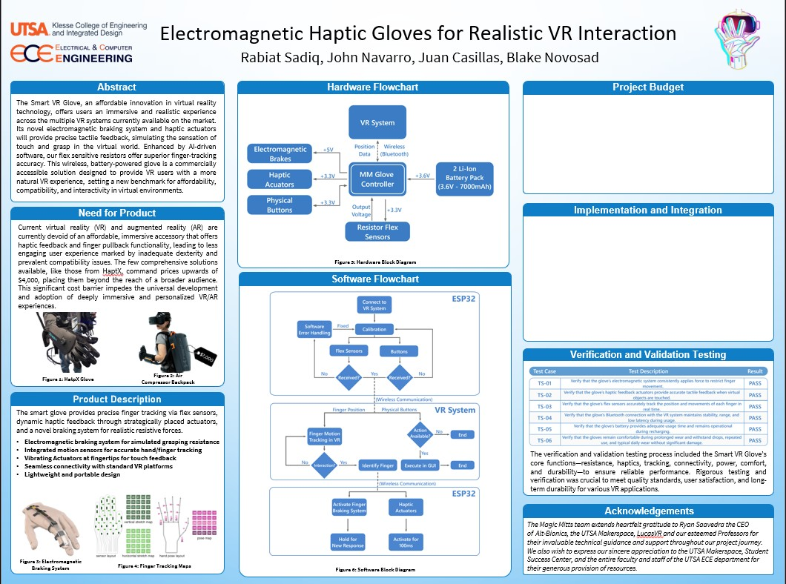

Almost every VR interaction ends the same way. Your hand closes through the object. Nothing stops it, because nothing is there. Everything else about the illusion can be excellent and that one moment still gives it away.
The gap we were aiming at
Consumer VR had, and largely still has, no affordable accessory that offers both haptic feedback and finger pullback. The comprehensive solutions that do exist, like HaptX, command prices upwards of four thousand dollars, which puts them out of reach of essentially everyone outside a research lab. Some of them need an air compressor worn as a backpack.
That cost barrier is not just an inconvenience. It decides who gets to develop for deeply immersive VR at all, and therefore what gets built.
If only labs can afford to feel things, only labs will build things worth feeling.
So the constraint we set was a price, not a feature list: build something that delivers real resistive force, in a glove a person would actually wear, for a bill of materials under fifty dollars.
How it stops your hand
The core of it is an electromagnetic braking system rather than a motor or an exoskeleton. When your finger reaches a virtual surface, the brake engages and resists further closing, delivering roughly 50N of pullback force. You do not feel a buzz telling you that you touched something. Your hand stops.
The reason that approach mattered is what it let us leave out. Exoskeletal force feedback gloves carry rigid linkages along every finger, which is most of their cost, most of their weight and most of the reason they are unpleasant after twenty minutes. An electromagnetic brake is small and sits close to the hand, so the glove stays soft and low-mass and feels markedly more comfortable to wear than the exoskeletal alternatives.
Alongside the braking, vibrating actuators at the fingertips handle the lighter half of the vocabulary: contact, texture, the moment of touch as distinct from the moment of resistance. Flex-sensitive resistors along the fingers do the tracking, running through a hardware driver we wrote ourselves rather than an off-the-shelf one.

The electronics
We built the PCB from scratch rather than stacking dev boards, which is the part of this project I would point at if someone asked what senior design actually taught me.
An ESP32 acts as the glove controller and talks to the VR system over Bluetooth. The board carries a dual rechargeable battery system running from two Li-ion cells, USB-C charging, integrated sensor processing for the flex resistors, the wireless module, isolated signal and boost converters to run the 5V brakes and 3.3V actuators off the same pack, and an overpower protection circuit.
That last one is not a footnote. This is a device that pulls current through electromagnets strapped to a person's hand, so protection is a safety requirement rather than a nicety.
| Subsystem | Rail | What it does |
|---|---|---|
| Electromagnetic brakes | 5V | Resist finger closing at a virtual surface, roughly 50N |
| Haptic actuators | 3.3V | Fingertip contact and texture cues, pulsed at 100ms |
| Flex resistors | 3.3V | Per-finger position and movement tracking |
| Physical buttons | 3.3V | In-world actions and calibration entry |
| ESP32 controller | 3.6V pack | Sensor processing and Bluetooth link to the VR system |
The software side
The loop is deliberately simple, because a haptic system that is late is worse than one that is quiet. The glove connects, calibrates against the wearer's own range of motion, then streams finger positions to the VR system. When the VR side detects an interaction, it identifies the finger involved and sends back one of two things: engage the braking system and hold until a new response arrives, or fire an actuator for 100ms.
Calibration per wearer turned out to matter more than we expected. Flex resistors do not agree with each other, hands are different sizes, and a glove that assumes an average hand is wrong for almost everybody. Calibrating on connect is a small piece of engineering that does a large amount of the work of making the thing feel accurate.

Verification, and what we actually proved
We ran a formal verification and validation plan against the glove's core functions rather than demoing it and calling it done. Six test cases, all passed.
| ID | What it verifies | Result |
|---|---|---|
| TS-01 | The electromagnetic system consistently applies force to restrict finger movement | Pass |
| TS-02 | Haptic feedback provides accurate tactile feedback when virtual objects are touched | Pass |
| TS-03 | Flex sensors accurately track the position and movement of each finger in real time | Pass |
| TS-04 | The Bluetooth connection maintains stability, range and latency | Pass |
| TS-05 | Battery provides adequate usage time and remains operational during recharging | Pass |
| TS-06 | The glove remains comfortable during prolonged wear and repeated use without significant damage | Pass |
I want to be careful about what that table does and does not claim. It says the glove does what we designed it to do, repeatably, under test. It is not a controlled user study, and I am not going to dress it up as one. Comfort in TS-06 means it survived prolonged wear without damage or complaint from the people testing it, not a validated comfort score against a control.
An earlier version of this page carried percentage improvements for latency and comfort. I pulled them, because I could not stand behind how they were measured. The numbers that are left are the ones I can defend: the force, the cost, the test results and the placement.
Engineering inside real constraints
The part of senior design that stuck with me was that the constraints document came before the fun part, and it was not busywork.
- Economic. The fifty dollar target was the whole thesis, so every component choice was a tradeoff against it. A decision matrix, not taste.
- Manufacturing. Assembling the glove requires sewing, which is not a widely held skillset in the US, so a design that assumed easy assembly would not have survived contact with production.
- Environmental. Material choices were weighed for sustainability rather than picked purely on performance.
- Schedule. Two semesters, fixed design reviews, and suppliers who do not care about your timeline.
None of that is glamorous and all of it is why the thing existed by the deadline.
My part in it
Four of us: two electrical engineers, two computer engineers. I led the team, and my hands-on work was the software and integration half, the Unity side and the embedded control, plus the interaction design decisions about what a given event should feel like and when.
The integration seam is where most of the difficulty lived. A virtual collision has to become a decision about which finger, which response, and how long, and it has to arrive fast enough that a person reads it as the same event rather than as a consequence of one. Most of what I learned on this project was about that seam.
What I would do differently
- Measure properly, and pre-register what counts as success. The reason I had to pull two numbers off this page later is that we measured casually and wrote confidently. I would rather have three defensible numbers than six impressive ones.
- Run a real user study with a control condition. We had the hardware to do it and ran out of semester.
- Revisit the brake resolution. Fifty newtons of stop is a binary that convinces you a surface is there. Communicating how hard something is, rather than only that it exists, is the next problem and a much more interesting one.
This project is also the direct ancestor of the Vision Pro work I did two years later. Same question about touch in immersive systems, opposite approach: instead of building hardware to put on the hand, use the hardware somebody is already wearing.